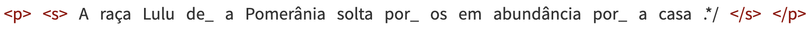
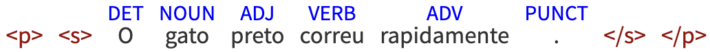
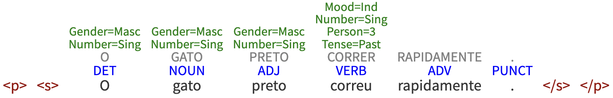

4 Sequência de caracteres e palavras
Morfologia e morfossintaxe
Neste capítulo, trataremos de algo que parece simples, mas não é: identificar a unidade mínima quando tratamos, computacionalmente, a língua. Essa delimitação não é consensual entre pesquisadores e profissionais de PLN. E, mesmo em linguística, há sempre controvérsias e necessidade de pontos de referência para se definir, por exemplo, o que seja uma palavra ou mesmo uma frase.
As subáreas especializadas dos estudos linguísticos entendem como unidade mínima de processamento diferentes elementos conforme seus focos e pontos de vista. A fonologia (Capítulo Texto ou fala?), por exemplo, considera o fonema como a menor unidade sonora e distintiva de uma língua. Se tomarmos o exemplo do que diferencia as palavras “sábia” (mulher inteligente), “sabiá” (pássaro) e “sabia” (verbo “saber”), percebemos que a sílaba tônica é o diferencial, especialmente quando pensamos em sons e fala e não em escrita.
Já a morfologia considera o morfema como a menor unidade dotada de significado na língua. Nessa perspectiva, temos os “pedacinhos” de palavras e seus valores, como seria o caso da marca de diminutivo “-inho”, que assinala o masculino e o singular em “menininho”, ou o segmento “-ei” no verbo “comprei”, que marca um modo-tempo (pretérito perfeito do modo indicativo) e também um número-pessoa (primeira pessoa do singular).
Assim, conforme o ponto de vista de quem analisa, uma palavra pode ser feita de sons e de sílabas tônicas e/ou composta de vários segmentos gráficos menores. Podemos, ainda, considerar segmentos ou pedaços mais abrangentes, conforme o critério que utilizamos. Um exemplo nessa linha seria a palavra “guarda-pó”, que pode ser considerada como uma palavra só ou a junção de duas palavras. Outro caso ilustrativo é “escova de dente”, que, para alguns, é a união de três palavras, e, para outros, é uma palavra só, mesmo que não tenha hífen. Além dessas questões, também é controverso tratar das abreviaturas, siglas, interjeições, dos modos de escrita diferenciados nas redes sociais, com internetês, hashtags, emojis, símbolos e outras peculiaridades.
Fazendo um paralelo, podemos entender que, de modo geral, os modelos de PLN trabalham as palavras como unidade primária de processamento. Vejamos, por exemplo, o caso da frase no Exemplo 4.1.
Exemplo 4.1
Jacinta Maria comprou uma cadeira em São Paulo ontem e pagou 25 reais por ela.
Na frase do Exemplo 4.1 são 15 palavras se considerarmos que é palavra toda a sequência de caracteres separada por um espaço em branco. Mas se pode pensar que Jacinta+Maria e São+Paulo são palavras compostas e que, talvez, o número 25 não seja bem uma palavra, não? A resposta será: depende do critério que você usar e da finalidade que tem ou busca com essa referência de unidade e/ou partes.
Ao fazer o processamento computacional de textos escritos, a definição de que tipo de unidade de processamento se quer buscar/estudar parece estar atrelada às necessidades da tarefa ou trabalho pretendidos. Geralmente, considera-se que uma palavra é, simplesmente, uma unidade grafológica delimitada, nas línguas europeias, entre espaços em branco na representação gráfica, ou entre um espaço em branco e um sinal de pontuação1. Essa é uma definição bastante concreta, e bastante prática. No entanto, ao pensarmos em nossos modelos computacionais e suas aplicações no mundo, é importante nos aprofundarmos um pouco mais na conceituação do que é uma palavra e nas possibilidades de processamento e implicações das decisões tomadas no pré-processamento dos corpora.
Segundo Cabré (1999, p. 20), as palavras são as unidades de referência da realidade empregadas pelos falantes. De acordo com essa definição, as palavras compõem a dimensão linguística mais estreitamente ligada ao mundo real. Ainda segundo a mesma autora, o léxico consiste no conjunto das palavras de uma língua e dos padrões que possibilitam a criatividade do falante. As palavras e, principalmente, as associações infinitas e imprevisíveis que os seres humanos são capazes de traçar entre elas, constituem a manifestação mais concreta e mais produtiva da língua. Assim, é importante que, ao processar dados textuais para gerar modelos computacionais, nos recordemos sempre de que não estamos simplesmente organizando um conjunto de caracteres ou ordenando uma representação ortográfica formal, mas que estamos trabalhando com recursos linguísticos que representam a experiência humana.
Em seguida, devemos considerar também o conceito de palavra computacional, que se refere a uma unidade linguística que foi adaptada ou criada especificamente para facilitar seu processamento por máquinas. Isso pode envolver a manipulação de palavras, frases ou até mesmo caracteres de maneira que seja mais conveniente para algoritmos e sistemas de PLN lidarem com elas.
A necessidade dessas palavras computacionais surge devido às complexidades do processamento de linguagem natural por máquinas. A linguagem humana é rica e ambígua, cheia de nuances e variações que podem ser difíceis de interpretar e analisar automaticamente. Portanto, ao transformar palavras em formas mais padronizadas ou simplificadas, os sistemas de PLN podem executar tarefas como análise gramatical, extração de informações (Capítulo Extração de Informação) e tradução (Capítulo Tradução Automática) com maior eficácia. Dependendo do objetivo da tarefa ou aplicação de PLN, é possível definir quais rotinas de pré-processamento são mais produtivas para criar as palavras computacionais, ou seja, pode-se remover ou não acentos ortográficos, espaços em branco em itens como “fim de semana”, ou hífens como em “guarda-chuva”.
No mesmo sentido, dependendo dos propósitos da tarefa, um modelo de aprendizado de máquina pode precisar definir expressões multipalavras (Capítulo Expressões multipalavras) (e.g. “nem que a vaca tussa”, “deus me livre” ou “ciência de dados”), hashtags (e.g. “#euamopuzzles”), URLs e outros compostos como palavras (ou unidades lexicais) únicas, como se fossem representadas sem espaços: “nemqueavacatussa”, “deusmelivre”, “ciênciadedados” e “euamopuzzles”. Essas e outras estratégias similares podem facilitar o processamento automático, mas devem considerar as necessidades de cada aplicação computacional.
Este capítulo apresenta conceitos (Seção 4.1) relacionados a essas unidades mínimas de processamento e que devem ser considerados quando lidamos com textos. Em seguida, são apresentadas as tarefas relacionadas ao processamento morfológico dos textos (Seção 4.2). E depois são indicadas as ferramentas e os recursos disponíveis para o português, exemplificando com uma aplicação prática de um recurso específico para o português brasileiro (Seção 4.3). Por fim, fazemos uma retomada dos principais tópicos discutidos, apresentando as considerações finais e os planos para uma futura versão deste capítulo (Seção 4.4).
4.1 Conceitos básicos da morfologia
Antes de vermos como identificar e tratar computacionalmente as unidades mínimas de processamento, cabe definir alguns conceitos linguísticos básicos necessários. Nesta seção, definimos os conceitos de Morfema (e todos os seus tipos) (Seção 4.1.1), Token e Type (Seção 4.1.2), Lexema, Lexia e Lema (Seção 4.1.3), Léxico e Gramática (Seção 4.1.4), Léxico comum e especializado (Seção 4.1.5), além de palavras funcionais e lexicais (Seção 4.1.6). Essa seção traz, ainda, informações sobre os processos de formação das palavras (Seção 4.1.7) e morfologia e morfossintaxe (Seção 4.1.8).
4.1.1 Morfema
O objeto principal de estudo da morfologia é o morfema, definido linguisticamente como “unidade mínima significativa”. Segundo essa definição, o morfema é a menor unidade linguística dotada de significado, considerando que há outras unidades linguísticas que também possuem significado, como a palavra, o sintagma, a frase, a oração, o período, o texto etc. Além disso, o morfema é considerado como “dotado de significado” por oposição ao fonema, que é o objeto de estudo da fonética e da fonologia, e, na verdade, é a menor unidade de análise linguística, porém não possui significado em si, mas tem a função de estabelecer diferença de significado entre uma palavra outra. Em outras palavras, o fonema é apenas uma unidade linguística distintiva (não significativa), pois diferencia as palavras por meio de seus sons (e.g. “faca” e “vaca” são duas palavras diferentes que se distinguem pelo fonema inicial “\f” ou “\v”). O mesmo vale para o trio “sábia”, “sabia” e “sabiá”, lembrando que estamos no território dos sons e não da escrita. Para saber mais sobre o processamento da fala, sugere-se a leitura de Capítulo Texto ou fala? e Capítulo Recursos para o processamento de fala.
Em uma explicação simples, podemos dizer que os morfemas são os pedacinhos que se juntam para formar as palavras. E esses “pedacinhos” podem ser de vários tipos: desinência, raiz, radical, afixo, vogal temática e tema. Por exemplo, podemos juntar o radical “experiment” com a vogal temática “a” com a desinência verbal “ri” e com a desinência verbal “a” para formar a palavra “experimentaria”. Esses quatro “pedacinhos” são chamados de morfemas e eles possuem significados:
- “experiment” significa o conceito lexical de “prova, ensaio, tentativa”;
- “a” significa que é um verbo da primeira conjugação;
- “ri” significa que esse verbo está flexionado no tempo futuro do pretérito do modo indicativo;
- “a” significa que esse verbo está flexionado na terceira pessoa do singular.
A seguir apresentamos brevemente uma definição e exemplos dos vários tipos de morfemas em português.
4.1.1.1 Desinência
Desinências são os morfemas que geralmente ficam no final da palavra e podem marcar gênero e número (no caso dos substantivos e adjetivos) ou marcar número, pessoa, tempo e modo (no caso dos verbos). Por isso as desinências podem ser classificadas em: nominais ou verbais.
Em português, o substantivo “meninas” é formado pelo radical “menin” + duas desinências nominais: “a”, que indica feminino, e “s”, que indica plural. Assim, dizemos que a palavra “meninas” está flexionada no feminino plural. Já o verbo “adotássemos” é formado pelo radical “adot” + a vogal temática “a” + duas desinências verbais: “sse”, que indica modo e tempo (pretérito imperfeito do subjuntivo), e “mos”, que indica número e pessoa (primeira pessoa do plural). Assim, dizemos que o verbo “adotássemos” está flexionado na primeira pessoa do plural do pretérito imperfeito do subjuntivo.
4.1.1.2 Raiz e radical
Na linguística teórica, existe uma diferença conceitual entre raiz e radical. Embora a definição de ambos os conceitos ressalte que são os constituintes da palavra que contêm significado lexical, no caso da raiz, ela não inclui afixos derivacionais ou flexionais (e.g. “beb” é a raiz de “beber”, “beberemos”, “bebendo”, “bebida”, “bebidinhas” e tantas outras formas flexionadas). No caso do radical, ele não inclui afixos de flexão, mas pode incluir afixos derivacionais (e.g. “beb” é o radical de “beber”, “beberemos” e “bebendo”, mas “bebid” seria o radical correto de “bebida” e de “bebidinhas”). Essa distinção, em termos linguísticos, é muito sutil e geralmente as aplicações de PLN assumem os dois termos como sinônimos.
A raiz ou radical é o morfema nuclear de uma palavra, ou seja, aquele constituinte básico que expressa sua base significativa, que designa o significado lexical da palavra. Portanto, ele é o componente comum a todas as palavras que pertencem à mesma família. Por exemplo, em português, “menino”, “meninas”, “meninada”, “meninice” e outras possuem a mesma raiz ou radical “menin”.
4.1.1.3 Afixo
Os afixos são os morfemas lexicais que se juntam com o radical ou com o tema para formar uma nova palavra, neste caso chamada de palavra derivada. A inserção de um afixo ao radical de uma palavra pode mudar-lhe o sentido ou adicionar-lhe uma ideia secundária ou ainda mudar sua classe gramatical.
Em português, os afixos podem ser de três tipos:
- prefixos, quando são inseridos antes do radical (ex: “desmatar”, “imortal”, “antioxidante”, “refazer”;
- infixos, quando são inseridos no meio de um radical, mas são bem raros; e
- sufixos, quando são anexados ao final do radical (ex: “ativamente”, “imaginação”, “crescimento”).
Apesar de os sufixos e as desinências serem morfemas acoplados ao final da palavra, eles não devem ser confundidos, pois os primeiros criam novas palavras derivadas, a partir de um processo de formação de palavras chamado de derivação. Já a adição de desinências não cria novas palavras, apenas flexiona a palavra existente em uma nova forma flexionada.
4.1.1.4 Vogal temática
Vogal temática é o nome dado às vogais que aparecem imediatamente após o radical da palavra, mas não representam seu gênero. Em português, as vogais temáticas podem ser de dois tipos:
- nominais, que podem ser “a” (ex: “atleta”, “colega”, “dentista”), “e” (ex: “agente”, “recorrente”, “alegre”) ou “o” (ex: “pássaro”, “crocodilo”, “dezembro”); e
- verbais, que indicam as 3 conjugações verbais: “a”, para verbos da primeira conjugação (ex: “andar”, “passear”, “falar”), “e” ou “o”, para verbos da segunda conjugação (ex: “escrever”, “ler”, “fazer”, “pôr”, “repor”, “compor”) ou “i”, para verbos da terceira conjugação (ex: “agir”, “assumir”, “partir”).
As vogais temáticas não devem ser confundidas com as desinências nominais, por exemplo, que indicam gênero em “menino” e “menina”. Neste caso, “o” e “a” são desinências nominais porque esses morfemas marcam os gêneros masculino e feminino, respectivamente. Novamente, cabe mencionar que há uma boa e extensa discussão sobre a natureza e funcionamento das vogais temáticas em linguística. Para quem quiser uma visão aprofundada, vale consultar o trabalho de Santana (2019), uma tese de doutorado sobre vogais temáticas.
4.1.1.5 Tema
Tema é a forma lexical que se cria quando se juntam dois morfemas: o radical e a vogal temática. Por exemplo, a partir da combinação do radical “crianç” com a vogal temática nominal “a”, forma-se o tema “criança”. Embora seja a junção de dois tipos de morfemas, o tema também é considerado como um morfema.
A forma lexical assumida pelo tema coincide com as formas de lexema, lexia e lema, que são as formas de entrada dos verbetes em dicionários, e que serão explicadas na Seção 4.1.3.
Ressalte-se, no entanto, que os termos tema e lema, na Linguística Textual, representam ideias completamente diferentes desses conceitos da morfologia.
4.1.1.6 Considerações até então
Por fim, vale dizer que todos esses tipos de morfemas explicados nas subseções anteriores podem ser agrupados em duas categorias: (i) morfemas lexicais, que representam a família semântica de determinada palavra, ou seja, a raiz, o radical e o tema; (ii) morfemas gramaticais, que inserem alguma informação à palavra existente, ou seja, as desinências, os afixos e as vogais temáticas.
Há ainda um tipo de morfema (ou fonema, dependendo da abordagem) que não foi explorado aqui porque não é relevante para os estudos de PLN, que são as vogais e as consoantes de ligação. Elas não possuem significado, mas, por vezes, são inseridas entre um radical e uma desinência ou um afixo, por uma motivação fonológica.
4.1.2 Token e Type
Token é um termo que significa qualquer sequência de caracteres à qual se atribui um valor. Nas línguas europeias, a sequência consiste em caracteres delimitados por espaços gráficos, sendo que a tokenização é ajustada para separar sinais de pontuação. Mas, na grande maioria das línguas, a tokenização não opera por espaços gráficos. Diante dessa definição, é comum associarmos token à palavra escrita. Nesse sentido, a quantidade de palavras + sinais de pontuação de uma sentença equivale à quantidade de tokens, por exemplo, a frase do Exemplo 4.2 contém 12 tokens, já que, em PLN, os sinais de pontuação (vírgula e ponto final) também são considerados tokens2.
Exemplo 4.2
Eu sempre viajo para Campinas, para Salvador e para Belém.
Type, por sua vez, refere-se aos tokens únicos encontrados numa frase ou texto. Retomando a frase do Exemplo 4.2, encontramos 10 types (“eu”, “sempre”, “viajo”, “para”, “Campinas”, “,”, “Salvador”, “e”, “Belém” e “.”). Nessa sentença, a palavra “para” ocorre três vezes, então ela é contada 3 vezes como token, mas apenas 1 vez como type.
A proporção token/type (divisão da quantidade de tokens pela quantidade de types) é um importante indicativo da riqueza lexical de um texto; ou seja, ela indica qual a diversidade de palavras existentes em um corpus, excluindo suas repetições. Mas, nessa medida, apenas as formas de palavras (as palavras diferentes) e o número total de palavras são contados. Isto é, sinais de pontuação não são considerados.
4.1.3 Lexema, Lexia e Lema
Lexema é sinônimo de unidade lexical, o que implica características de som, forma e significado. Por exemplo, “comprei” é um lexema cuja representação fonética é [kõpr’ ej] ; morfologicamente, é um verbo flexionado na primeira pessoa do singular, no pretérito perfeito do modo indicativo. Seu significado é o que encontramos nos dicionários: adquirir (algo, produto, serviço etc.) em troca de pagamento.
Vale assinalar que, nos estudos do léxico do Brasil, temos também o termo técnico lexia, que corresponde à realização concreta de um lexema. Por exemplo, um lexema – que seria uma forma em abstrato, como “árvore” – pode acontecer sob a forma de uma lexia como “árvores”. Lexia é, nessa perspectiva, uma “forma que um lexema assume no discurso. Exemplo: ‘O dia está claro.’ Temos aí quatro lexias” (Biderman, 1978, p. 130). A lexia realiza-se no discurso e/ou texto e se distingue do lexema, que se situa ao nível do sistema abstrato que é a língua. Em resumo, o lexema é uma representação conceitual enquanto a lexia é a unidade linguística materializada no discurso.
Como você pode perceber, em linguística, temos vários termos para designar, algumas vezes, uma mesma noção. Por isso, um termo como palavra também equivale a vocábulo. Se quiser saber mais sobre essas diferentes concepções linguísticas, no âmbito dos estudos do léxico, vale dar uma olhada na parte introdutória do trabalho de Sarmento (2019).
Por sua vez, lema é a representação das propriedades sintático-semânticas de um item lexical. Isso significa que, a partir de um lema, é possível saber quais argumentos a ele se relacionam. Por exemplo, “comprar” é um verbo que seleciona dois argumentos: um sujeito e um objeto. Esses dois argumentos são necessários para que a estrutura na qual ele está inserido seja gramatical, ou seja, aceita e compreendida pelos falantes. Além disso, é por meio do lema que se pode acessar seu significado: “comprar” remete a uma ação que envolve uma moeda e a obtenção de algo. Nesse sentido, o lema pode ser considerado uma parte do lexema.
A palavra, na forma de lema, é também a forma de entrada dos verbetes em um dicionário, tendo-se em mente também uma categoria de palavra. Por isso, temos “filósofo” como o lema dos substantivos “filósofo”, “filósofos”, “filósofa” e “filósofas” e temos “filosofar” como o lema de “filosofei”, “filosofamos”, “filosofemos” e todas as demais flexões do verbo.
4.1.4 Léxico e Gramática
Se é verdade que não existe língua sem gramática, mais verdade ainda é que sem léxico não há língua. As palavras são a matéria-prima com que construímos nossas ações de linguagem.
A afirmação de Antunes (2017) na epígrafe diz muito e coloca em relação os elementos que estruturam e fazem funcionar uma língua. Um conjunto de regras sistemáticas servem para definir o que é considerado certo ou normal em uma língua. Por exemplo, segundo a regra de ordem de palavras, usamos, em um discurso normal, não poético, a frase “ele leu o livro” e não “o leu ele livro”. Regras como essa apontam para gramática, enquanto o léxico corresponde ao conjunto de palavras de uma língua.
Léxicos contêm as palavras de uma língua juntamente com as definições morfossintáticas (Seção 4.1.8) possíveis para cada uma das palavras. Geralmente cada palavra do léxico tem associada a ela uma ou mais triplas com sua categoria gramatical, também chamado de PoS (Part-of-Speech), seu lema e suas características morfológicas, também chamadas de features.
As categorias gramaticais podem variar segundo os critérios da representação que será adotada, podendo seguir um entre diversos padrões. Porém, para o português é usual definir as categorias gramaticais: substantivos, adjetivos, nomes próprios, numerais, pronomes, preposições, conjunções, advérbios e verbos. Dependendo dos critérios escolhidos, pode-se incluir outras categorias como artigos ou determinantes. Pode-se também promover divisões, como por exemplo dividir as conjunções em conjunções coordenativas e conjunções subordinativas, ou ainda verbos em verbos auxiliares e verbos plenos. A escolha do conjunto de categorias possíveis é a primeira decisão para a construção de um léxico. Um exemplo de categorias adotadas para o português é apresentado na Seção 4.3.3.
Igualmente, a escolha das características morfológicas que serão consideradas e seus valores possíveis é também uma decisão importante que deve ser tomada. É usual que a definição de categorias de PoS e características morfológicas seja acompanhada de um conjunto de etiquetas (em inglês, tags) que serão usadas para representar as informações associadas a cada palavra do léxico. Por exemplo, uma entrada de um léxico para a palavra “elas” pode conter a categoria gramatical pronome, o lema “ele” e características de pronome pessoal na terceira pessoa do plural e gênero feminino. Neste exemplo, trata-se de uma palavra que só possui uma possível tripla PoS, lema e features. No entanto, é bastante comum encontrarmos palavras que possuem diversas triplas possíveis de informações associadas, como por exemplo, a palavra “casas” que pode ser:
- um verbo, com o lema “casar”, no presente do indicativo, na segunda pessoa do singular;
- um substantivo, com o lema “casa”, que é do gênero feminino e está no plural.
Cabe salientar que pela própria natureza das línguas, por mais completo que um léxico possa ser, sempre é possível ter palavras da língua ausentes do léxico.
4.1.5 Léxico comum e Léxico especializado
O léxico comum corresponde ao conjunto de palavras de uma língua que não têm um “conceito técnico-científico” bem determinado, historicamente construído, atrelado a ela. Em contrapartida há o léxico especializado, no qual a palavra assume um significado específico/especial em relação a um sistema de conceitos específico, que geralmente corresponde a uma área de conhecimento, ciência ou especialidade. É esse ambiente “especializado” que definirá se ela pode ser entendida como uma terminologia “técnica” (termo) ou uma palavra comum. Um item que a gente lê e diz que é um termo é, por exemplo, “ferritina”, enquanto “caderno” parece um protótipo de palavra comum, do léxico comum. Novamente, pode-se pensar que a categorização ou classificação são referências e que sempre pode haver algo que parece um meio-termo.
E há ainda termos técnicos que passam a funcionar como palavras, na língua comum, e vice-versa. Um exemplo interessante é o caso de “criança”, que no âmbito jurídico corresponde a uma pessoa que tem até doze anos de idade, conforme vemos no Estatuto da Criança e do Adolescente (ECA)3 do Brasil. Isto é, nesse “cenário especializado” do ECA, a palavra “criança” assume status de terminologia, pois corresponde a um conceito específico, oposto a outros. Já a palavra “acetona”, como sinônimo de “removedor de esmalte de unhas”, é algo que fez o caminho inverso, uma vez que passou de termo do léxico especializado a palavra do léxico comum.
Veja como fica o termo “DNA”, que é uma sigla para um termo “técnico” em inglês, nome de um ácido, que é usado em diferentes situações e parece circular entre o ambiente técnico Exemplo 4.4 e o ambiente da linguagem comum Exemplo 4.3, do nosso dia a dia – pois passou a corresponder a um nome de um exame para confirmação de paternidade.
Exemplo 4.3
No programa de TV, Joana disse que ia jogar na cara do ex-namorado um DNA. E disse que ele, depois, ia ver que o filho que ele renegou tem um DNA de gente de bem.
Exemplo 4.4
O DNA (ácido desoxirribonucleico) é um tipo de ácido nucleico que possui papel fundamental na hereditariedade, sendo considerado o portador da mensagem genética.4
Vale mencionar, também, que para aplicações que envolvem mais do que um idioma, como a Tradução Automática (Capítulo Tradução Automática), os léxicos são bilíngues (ou multilíngues) especificando não apenas as palavras que compõem os léxicos dos vários idiomas, mas também o mapeamento (paralelismo) existente entre palavras de um e outro(s) idioma(s).
4.1.6 Palavras funcionais e palavras lexicais
As palavras funcionais/gramaticais e as palavras lexicais são outra dualidade, também complexa, que podemos tentar “resolver” ou melhor, entender, pensando em classificá-las. As palavras funcionais/gramaticais ficam em uma classe fechada. Já as palavras lexicais ficam em outro grupo ou tipo, pensando que correspondem a uma classe aberta. A classe fechada é assim pensada porque tem um número finito de componentes. A classe aberta, por outro lado, acomoda um número bem maior de componentes, pois é uma classe que tem a ver com a capacidade de as pessoas criarem palavras novas.
Podemos pensar que as preposições do português são as mesmas desde sempre; não criamos muitas. Já os adjetivos e os substantivos não param de nos surpreender, pois parece que há uma inventividade envolvida em nomes e qualificativos, como o adjetivo, que também pode ser substantivo “cloroquiner”. Essa nova palavra surgiu no contexto da Pandemia de Covid-19, em 2020, no Brasil.
Pensar em conjuntos também nos ajuda a entender essa diferença entre funcional/gramatical e lexical. Mas sempre poderemos pensar que uma palavra como “não” é uma palavra lexical, se o critério para classificar for “palavra que tem um sentido” em si mesma. Via de regra, algumas classes de palavras são sempre consideradas como de classe aberta, como os verbos, os adjetivos e os substantivos, enquanto outras classes são sempre definidas como de classe fechada, tais como os artigos (determinantes), as preposições e as conjunções. Outras classes, como os advérbios ou os pronomes, por exemplo, podem ser considerados palavras lexicais ou funcionais, dependendo de suas subclassificações.
4.1.7 Processos de formação das palavras
Existem dois tipos de processos usados para a formação de novas palavras: (i) por derivação e (ii) por composição. São mecanismos linguísticos que permitem criar novas palavras a partir de unidades já existentes na língua.
A derivação é um processo pelo qual novas palavras são criadas adicionando afixos (prefixos, sufixos, infixos etc.) à raiz ou radical. Esses afixos podem alterar o significado, a classe gramatical (substantivo, adjetivo, verbo etc.) ou outros aspectos da palavra base. Por exemplo, considere o substantivo “amigo”. Se adicionarmos o sufixo “-ável” a ele, obtemos o adjetivo “amigável”. Nesse caso, o sufixo altera o sentido da palavra e também sua classe gramatical.
Existem cinco tipos de derivação:
- prefixal, quando se adiciona um prefixo ao radical;
- sufixal, quando se adiciona um sufixo ao radical, como no exemplo acima;
- parassintética, quando se adiciona ao mesmo tempo um prefixo e um sufixo ao radical, como no caso de “desmatamento”, que é derivado de “mata”;
- imprópria, quando muda a categoria gramatical da palavra, mas sem alterar sua forma, como no caso de “Ela tem um andar lento”, em que “andar” originalmente é um verbo, mas passa a ser um substantivo nesse contexto; e
- regressiva, quando se suprime uma desinência de um verbo para formar um substantivo, como é o caso de “choro”, que é derivado de “chorar”.
Já a composição é um processo em que novas palavras são formadas combinando duas ou mais palavras independentes, ou dois radicais, para criar uma nova palavra com um significado diferente. As palavras compostas podem ser formadas por substantivos, adjetivos, verbos, advérbios e outras classes gramaticais. Além disso, elas podem ser escritas juntas, separadas por hífen ou até mesmo separadas sem qualquer marcação, dependendo da língua e das convenções ortográficas. São exemplos de palavras formadas por composição: “girassol” (“gira” + “sol”), “planalto” (“plano” + “alto”), “guarda-chuva” (“guarda” + “-” + “chuva”).
Existem 2 tipos de composição:
- por justaposição, em que uma nova palavra é formada a partir da união de dois ou mais radicais, sem apresentar alterações nos seus sons, ou seja, sem alterações fonéticas, como em “cachorro-quente” (“cachorro” + “-” + “quente”), “passatempo” (“passa” + “tempo”), “guarda-chuva” (“guarda” + “-” + “chuva”); e
- por aglutinação, em que as palavras também são formadas pela união de dois ou mais radicais, porém sofrem alterações, como “vinagre” (“vinho” + “acre”), “embora” (“em” + “boa” + “hora”) e “fidalgo” (“filho” + “de” + “algo”).
Ambos os processos de derivação e de composição são fundamentais para a expansão do vocabulário e a expressão de nuances semânticas na linguagem.
4.1.8 Morfologia e morfossintaxe
Por fim, mas não menos importante, é necessário definir o escopo de estudo do que chamamos de morfologia, pois o seu objeto de estudo muitas vezes se intersecta com o objeto de outra área da linguística, a chamada Sintaxe, que será explorada no Capítulo Sequência de caracteres e palavras. Na fronteira entre a morfologia e a sintaxe, está a morfossintaxe. Na prática, essas três áreas estão intimamente ligadas e relacionadas, mas, para fins didáticos, distinguimos esses termos a partir de seus objetos de estudo.
A morfologia é o ramo da linguística que se concentra no estudo dos morfemas, que são os “pedacinhos” significativos que formam as palavras. Assim, a morfologia examina como eles se combinam nos processos de flexão e de formação de palavras. Em PLN, a morfologia cuida também da classificação dos atributos morfológicos (ou features morfológicas), tais como os traços de gênero, número, modo, tempo, pessoa, voz, caso, entre outros.
Já a morfossintaxe examina como as escolhas morfológicas (como flexões verbais e concordância nominal) afetam a organização das palavras em uma sentença e como essas escolhas influenciam a estrutura sintática. Em outras palavras, ela categoriza as palavras em diferentes classes de palavras (ou categorias gramaticais) a partir da observação de seus atributos morfológicos. Em PLN, as classes de palavras são chamadas de part-of-speech ou PoS e a tarefa de atribuição de etiquetas de PoS nos textos será explicada na Seção 4.2.5.
Em resumo, a morfologia lida com a estrutura interna das palavras e os morfemas que as compõem, enquanto a morfossintaxe explora como as escolhas morfológicas afetam a estrutura das frases. Ambas as áreas são consideradas neste capítulo.
4.2 O processamento morfológico em PLN
Após definir conceitos necessários da área de morfologia, demonstraremos como tratar esse nível de análise linguística no Processamento de Linguagem Natural. Para desenvolver praticamente qualquer aplicação de PLN, é necessário realizar fases/etapas que convencionamos chamar de pré-processamento. Nesse pré-processamento, algumas tarefas usuais são: segmentação do texto em sentenças (sentenciação), separação de palavras (tokenização), tokenização em subpalavras (vetorização de subtokens), normalização de palavras (lematização e radicalização), entre outras.
Além das etapas do pré-processamento, também podem ser realizadas tarefas de processamento do conteúdo dos textos, como a etiquetagem morfossintática das palavras em relação às suas classes gramaticais (tarefa de PoS tagging) e a anotação automática de seus atributos morfológicos (tarefa de anotação de feats ou features morfológicas), que também serão exploradas nesta seção.
4.2.1 Sentenciação
A sentenciação (ou sentenciamento) é o processo de segmentação do texto em sentenças, ou seja, é o processo de identificação de unidades textuais de processamento onde se definem os limites de cada sentença. A denominação de detecção de limite de sentença é frequentemente utilizada como sinônimo da segmentação de sentenças, pois o problema se limita a descobrir onde cada sentença termina (Hapke et al., 2019). Este processo é naturalmente complexo, pois a ambiguidade das línguas torna impossível ter sempre certeza de onde termina uma sentença (Read et al., 2012).
No caso do português escrito, as técnicas usuais se valem da busca de pontuações delimitadoras como “.”, “!” e “?”. Note-se que no processamento de textos falados, ou mesmo em algumas línguas onde a delimitação de sentenças não é feita por pontuação, o processo de segmentação de sentenças se torna ainda mais difícil.
A detecção do limite de sentença no português não tem como desafio identificar as pontuações delimitadoras, pois esse é usualmente um conjunto finito e conhecido (“.”, “!” e “?”, “...”). O desafio é desambiguar essas ocorrências com outros usos dos mesmos caracteres. Um exemplo disto é o caso das abreviações. Por exemplo, na sentença do Exemplo 4.5 temos duas ocorrências do caractere “.”.
Exemplo 4.5
Fui à clínica do Dr. Nilo.
Na primeira ocorrência, o “.” é utilizado como indicador da abreviação da palavra “Doutor” e, na segunda, como delimitador do fim da sentença. Note-se que a sentença do Exemplo 4.6 é uma sentença perfeitamente aceitável e, neste caso, o “.” está sendo utilizado duplamente como indicador de abreviação e fim de sentença.
Exemplo 4.6
Fui à clínica do Dr.
Outro caso comum de ambiguidade no uso de pontuações delimitadoras é encontrado em numerais. Em português, utiliza-se também o caractere “.” como delimitador de milhar em um número, enquanto em inglês ele é utilizado como separador de decimais. Algumas vezes ambos os usos aparecem, ainda que erroneamente, em sentenças em português, como no Exemplo 4.7.
Exemplo 4.7
A venda de 25.000 ações fez o índice de rentabilidade baixar para 0.5%, segundo a BOVESPA.
Um problema semelhante acontece com algumas definições matemáticas dentro de uma sentença, como quando se utiliza o caractere “!” para definir o fatorial de um número, como no Exemplo 4.8.
Exemplo 4.8
As permutações de cinco elementos podem ser calculadas como 5!, que é o fatorial de cinco.
Em todos estes casos, torna-se difícil detectar quando o caractere está sendo utilizado com função de fim de sentença ou não.
Por essas razões, o problema de segmentação automática de textos, ainda que explorado desde o início pela área de PLN, é bastante desafiador e ainda está em aberto. Atualmente utilizam-se três tipos de abordagens computacionais para resolvê-lo:
- Abordagens baseadas em regras, onde são definidos padrões de fim de sentença através de regras que podem incluir, por exemplo, heurísticas, abreviações usuais, expressões regulares para números e URLs. Este é, em geral, o método implementado em segmentadores de sentenças disponíveis em pacotes como o NLTK5 (Bird; Loper, 2004).
- Abordagens baseadas em aprendizado de máquina supervisionado, ou seja, modelos computacionais treinados sobre conjuntos anotados (gold standard, veja Capítulo Conjunto de dados, dataset e corpus) onde o desafio é desenvolver um conjunto de treino de tamanho e características relevantes para os textos que se pretende sentenciar.
- Abordagens baseadas em aprendizado de máquina não supervisionado, ou seja, modelos computacionais treinados sobre conjuntos não anotados, mas que são suficientemente grandes e representativos para que se possa construir um modelo de linguagem adequado.
O problema de segmentação de sentenças é extremamente importante, pois, por ser uma etapa inicial do pré-processamento, os problemas não resolvidos nessa etapa tendem a prejudicar as etapas posteriores. Em comparação com outras tarefas de PLN, a segmentação de sentenças costuma receber menos atenção do que deveria, tanto no desenvolvimento de pesquisas, quanto na implementação de casos práticos.
Vale esclarecer que a sentenciação é uma tarefa de pré-processamento que tem relação com a morfologia porque, apesar de sua unidade de análise ser a sentença, os casos de ambiguidade (e, portanto, segmentação incorreta) têm a ver com a delimitação das palavras, que é o objeto de estudo da morfologia.
Na Seção 4.3.1, indicaremos alguns sentenciadores (ou também chamados sentencizers) disponíveis para o português.
4.2.2 Tokenização
A separação em unidades linguísticas mínimas é denominada tokenização (em inglês, tokenization) e, como já mencionado anteriormente, no caso do português é feita partindo da separação das palavras através de delimitadores. Neste caso, faz-se necessário identificar os limites das palavras através de caracteres delimitadores como espaços em branco ou símbolos de pontuação como “,”, “:”, “;”, “-” e “.”. Novamente, aqui é necessário se atentar para casos específicos como “,”, “-” e “.” que não devem ser separados dos demais caracteres que vêm antes ou depois. Por exemplo, a sentença do Exemplo 4.9 possui 11 tokens: “Além”, “disso”, “,”, “a”, “produção”, “será”, “descontinuada”, “em”, “8,3”, “%” e “.”, sendo que 8,3 deve ser considerado um token único e não 3 tokens separados.
Exemplo 4.9
Além disso, a produção será descontinuada em 8,3%.
Outra tarefa frequente da tokenização é a separação de palavras contraídas, por exemplo, a palavra “da” é separada em dois tokens: “de”+“a” e a palavra “nelas” é separada nos tokens “em”+“elas”. Essa tarefa é necessária para diversas aplicações e, em muitos casos, é um processo simples, pois a palavra contraída não é ambígua. No entanto, em alguns casos, pode ser necessário um processo de desambiguação, como nas palavras “pelo” (que pode ser “por”+“o” ou o substantivo “pelo”) e “consigo” (que pode ser tokenizada em “com”+“si” ou corresponder à conjugação do verbo “conseguir”). Esse é ainda um dos desafios da tokenização em português. A Figura 4.1 mostra o resultado da tokenização usando uma das ferramentas atualmente disponíveis para o português6 para a sentença do Exemplo 4.10.
Exemplo 4.10
A raça Lulu da Pomerânia solta pelos em abundância pela casa.

Na Figura 4.1 observamos que “da” e “pela” foram corretamente descontraídas como “de_ a” e “por_ a” respectivamente. Já o substantivo “pelos” foi incorretamente separado em “por_ os”. Problemas de descontração indevida, ou da falta dela quando necessária, geram problemas para a análise sintática, como veremos no Capítulo Sequência de caracteres e palavras.
Além desses casos, há também outros que envolvem a decisão de separar ou não palavras hifenizadas. Por exemplo, usualmente não se separa palavras como “sexta-feira”, que correspondem a um substantivo único. No entanto, é usual tokenizar palavras como “sinto-me” em três tokens: o verbo “sinto”, o sinal de pontuação “-” e o pronome “me”. Mais uma vez a aplicação pretendida é que definirá o que deve ser feito ou não.
A tokenização, assim como o sentenciamento, é um processo que pode ser resolvido com estratégias baseadas em regras ou que utilizam as mesmas abordagens de aprendizado de máquina supervisionadas e não supervisionadas citadas anteriormente. A complexidade do processo de tokenização é, no entanto, menor que a do processo de sentenciação, pois o processo pode ser auxiliado pela existência de recursos léxicos que facilitam bastante a tarefa de identificar os limites possíveis da maioria dos tokens a serem separados.
Na Seção 4.3.1, apresentaremos os tokenizadores (ou também chamados tokenizers) disponíveis para o português.
4.2.3 Tokenização em Subpalavras
Outro conceito relacionado ao de unidade de processamento que se tornou bastante popular nos últimos tempos (principalmente com o surgimento das arquiteturas neurais para processamento da língua) é o de subpalavra (em inglês, subword). As aplicações recentes de modelos de linguagem baseados em redes neurais tornaram bastante comum a quebra de palavras em porções eventualmente menores, as subpalavras. Esse processo de tokenização em subpalavras tem por objetivo reduzir o vocabulário de trabalho de um modelo de linguagem a um tamanho finito, mas que possa ser usado para representar textos onde o número de types (quantidade de tokens distintos) seja potencialmente infinito. Dessa forma, pode-se utilizar um conjunto de treino que possua um vocabulário finito e que seja capaz de ser aplicado a qualquer texto7.
Por exemplo, um modelo de linguagem pode ser projetado para ter um vocabulário de trabalho com 30.000 types, ou seja, um índice numérico de 1 a 30.000 único para cada type a ser representado de forma que se possa definir um vetor de 30.000 posições, em que cada posição corresponde a um dos types considerados. Essa abordagem é necessária para utilizar representações vetoriais como, por exemplo, as representações word2vec (Mikolov et al., 2013) e GloVe (Pennington et al., 2014) a serem tratadas no Capítulo Representação vetorial e semântica distribucional. Apesar dos vocabulários de trabalho serem usualmente grandes, esses vocabulários são insuficientes para representar textos em português associando uma possível palavra da língua a cada type, já que o português possui mais de 800.000 palavras, sem contar novas palavras que podem ser criadas, como o exemplo “cloroquiner” citado na Seção 4.1.6.
A abordagem de tokenização em subpalavras consiste em codificar diretamente algumas palavras mais comuns, como “de”, “fazer”, “são” e “feliz”. No entanto, palavras mais raras, como “desfazer” ou “felizmente” podem ficar fora do vocabulário de trabalho (OOV do termo em inglês out-of-vocabulary) e portanto serem representadas como combinações de subpalavras, respectivamente: “de” + “s” + “fazer” e “feliz” + “mente”.
Dessa forma, uma subpalavra pode ser uma sequência qualquer de caracteres ou podem ser sequências com algum significado linguístico como prefixos e sufixos (e.g., “mente” comumente designa advérbios, como “felizmente”), mas até letras únicas de forma que sempre seja possível representar qualquer palavra pela composição de subpalavras pertencentes ao vocabulário (e.g., a subpalavra “s”, que é uma letra única, pode ser utilizada para, junto com as subpalavras “de” e “fazer”, ser articulada para representar “de” + “s” + “fazer”).
A escolha do vocabulário de trabalho, ou seja, a escolha das subpalavras que o compõem, pode ser feita utilizando diversas técnicas, mas três algoritmos são frequentemente utilizados: BPE (Byte-Pair Encoding) (Sennrich et al., 2016), Word-Piece (Schuster; Nakajima, 2012) e Unigram (Kudo, 2018). O primeiro, BPE, é inspirado em técnicas de compreensão de dados e busca representar como subpalavras os tokens mais frequentes. O segundo, Word-Piece, é utilizado pelo BERT (Devlin et al., 2019) e busca reduzir o tamanho do vocabulário através da escolha de subpalavras que possam ser utilizadas em um número maior de tokens. O terceiro, Unigram, também foca na redução do vocabulário e inicializa o treinamento com um vocabulário grande de caracteres, subpalavras e palavras, e vai reduzindo esse vocabulário mantendo somente os itens mais relevantes até alcançar o tamanho de vocabulário desejado.
4.2.4 Normalização
Por sua vez, a normalização é a tarefa que converte as palavras para alguma forma padrão. São exemplos de normalização: conversão de versões abreviadas de palavras (e.g., conversão de “vc” para “você”), conversão para caracteres minúsculos (e.g., convertendo “Você” para “você”), lematização (e.g., estabelecendo que “somos” é uma conjugação do verbo “ser”) e radicalização (e.g., estabelecendo que “retrabalho” tem o radical “trabalho”8 precedido do prefixo “re”). De acordo com a abordagem utilizada, diferentes tipos de normalização podem ser necessários para tratar de maneira mais eficiente o processamento textual.
Na verdade, o propósito do tratamento computacional tem muita influência nos tipos de normalização que precisam ser feitos. Em alguns casos, certas informações no texto a ser processado podem ser vistas como relevantes, enquanto outras como apenas ruído. Por exemplo, quando temos como propósito identificar o sentido geral de um texto, a conversão de abreviaturas tende a auxiliar a identificação do conteúdo considerando, por exemplo, “PLN” e “Processamento de linguagem natural” como equivalentes. Por outro lado, com o propósito de identificar entidades nomeadas, a conversão para caracteres minúsculos pode dificultar o processamento.
A tarefa de conversão de abreviações é usualmente baseada em listas predefinidas de abreviações comuns que podem ser utilizadas em um processo de busca e substituição. No entanto, alguns cuidados usuais devem ser tomados para que somente tokens completos e com o sentido apropriado sejam substituídos. Por exemplo, uma abreviação usual em textos de mensagens é a representação “rs” como abreviação de “risos”, mas a substituição desta abreviação, que está correta na sentença do Exemplo 4.11, ficaria completamente errada na sentença do Exemplo 4.12, pois poderia resultar em “Os youtuberisos do RS tem muito sotaque.” que substituiria erroneamente o final da palavra “youtubers”.
Exemplo 4.11
Eu já sabia… rs.
Exemplo 4.12
Os youtubers do RS tem muito sotaque.
A tarefa de conversão para caracteres minúsculos é menos delicada, podendo ser facilmente implementada por simples processamento da representação individual dos caracteres. No entanto, mesmo nesse caso é necessário tomar certas precauções com nomes próprios e outras representações onde existe semântica associada ao uso de maiúsculas e minúsculas. Por exemplo, se fizermos a substituição de maiúsculas por minúsculas da frase do Exemplo 4.12, podemos erroneamente descaracterizar a denominação do estado do Rio Grande do Sul (“RS”), tornando o texto produzido ambíguo com a abreviação “rs”. Apesar disso, o processo de conversão para caracteres minúsculos é uma tarefa usual, pois permite a consulta a recursos linguísticos de uma forma mais eficiente.
A tarefa de lematização envolve, frequentemente, a consulta a recursos linguísticos que possuem a definição de lemas e morfologia das palavras, como, por exemplo, um léxico da língua (Seção 4.3.2). O grande desafio desta tarefa é a desambiguação sintática das palavras que, segundo seu uso, podem ter lemas distintos. Por exemplo, na sentença do Exemplo 4.13 a palavra “casa” na sua primeira ocorrência terá como lema o verbo “casar”, enquanto a segunda ocorrência terá como lema o substantivo “casa”. Nesses casos é importante desambiguar morfossintaticamente as palavras (Lopes et al., 2023).
Exemplo 4.13
Quem casa, quer casa.
Outra abordagem utilizada é através de padrões, a fim de trazer a palavra para sua forma canônica (e.g., trazer substantivos para o masculino singular e todas as flexões do verbo para sua forma no infinitivo) (Bertaglia; Nunes, 2016). Note-se que essa abordagem requer sofisticações para tratar palavras que não têm comportamento regular. Por exemplo, se a palavra “meninas” pode ser trazida corretamente ao lema substituindo a terminação “as” por “o” resultando no lema “menino”, a palavra “casas” seria erroneamente lematizada para o lema “caso” se utilizássemos o mesmo princípio.
A tarefa de radicalização tem o propósito de converter lexemas para seus radicais. Uma particular vantagem deste tipo de tarefa é uniformizar e diminuir o vocabulário, ainda que possam levar à perda de informação. No entanto, em algumas aplicações, a busca dos radicais de uma palavra pode auxiliar, inclusive, no estabelecimento de subpalavras que foi descrito na Seção 4.2.3. Por exemplo, as palavras “certo”, “certidão”, “incerto”, “certamente”, “certificação”, “certeiro” e “incerteza” possuem o mesmo radical “cert” e, portanto, tornam “cert” um bom candidato a subpalavra. Algoritmos de radicalização (stemming, em inglês) podem ser encontrados em bibliotecas usuais da área de PLN, como NLTK (Bird; Loper, 2004), que oferecem opções para várias línguas, inclusive para o português.
Na Seção 4.3.1, apresentaremos algumas ferramentas disponíveis para o português que fazem a normalização dos textos, tais como lematizadores, radicalizadores, stemmers e outros.
4.2.5 PoS tagging
O PoS tagging, também conhecido como etiquetagem morfossintática, é uma técnica fundamental na área de PLN que envolve a atribuição de etiquetas gramaticais a cada palavra em um texto, com base na sua classe gramatical e em suas características morfológicas. Essas etiquetas ajudam a identificar a função sintática e morfológica das palavras em uma sentença, o que é crucial para a posterior análise sintática, mas também é útil para outras aplicações, como tradução automática (Capítulo Tradução Automática), análise de sentimentos, geração de resumos, entre outras.
As classes de palavras são universais e valem para a grande maioria das línguas naturais, incluindo o português. São elas: substantivos, verbos, adjetivos, advérbios, pronomes, numerais, artigos, conjunções, preposições e interjeições. Porém, as etiquetas de PoS que cada modelo de anotação define podem ser diferentes, assim como pode haver diferentes níveis de granularidade das etiquetas. Nesse sentido, um tagger (nome dado a uma ferramenta computacional que realizada a etiquetagem morfossintática) pode usar apenas as etiquetas de granularidade grossa (em inglês, coarse tags ou UPoS), que correspondem às classes de palavras acima, enquanto outros taggers podem usar um conjunto de etiquetas de granularidade fina (em inglês, fine-grained tags ou XPoS). Por exemplo, os adjetivos costumam ser associados à coarse tag ADJ, mas também podem ser etiquetados como JJ (para adjetivos primitivos), JJR (para adjetivos comparativos) ou JJS (para adjetivos superlativos). Horsmann; Zesch (2016) propõem uma abordagem que combina os dois níveis de anotação para aumentar a precisão do tagger.
A Figura 4.2 mostra um exemplo de etiquetagem morfossintática realizada pelo parser LXUTagger9.

Cada palavra é analisada quanto à sua forma e função na sentença. É necessário fazer essa análise dependente de contexto porque existem palavras polissêmicas, ambíguas, homônimas etc. Dentro do contexto, é possível, por exemplo, distinguir o substantivo “ajuda” (e.g. “Ele recebeu ajuda para executar o trabalho.”) do verbo “ajuda” (e.g. “Sempre que precisa, ele ajuda a comunidade.”).
Várias abordagens são possíveis e usuais para esse tipo de tarefa, desde a anotação manual das etiquetas e posterior treinamento de modelo, até o uso de redes neurais. As mais conhecidas ainda hoje são as baseadas em regras (Brill, 1992), em redes neurais artificiais (Schmid, 1994), as abordagens estocásticas (Hall, 2003) e as híbridas (Altunyurt et al., 2006; Zin, 2009).
A seguir, explicamos brevemente algumas dessas abordagens, sumarizando o trabalho de Zewdu; Yitagesu (2022), que fizeram recentemente uma revisão sistemática da literatura sobre as técnicas usadas para etiquetagem de PoS. Ressaltamos, no entanto, que, para uma visão mais aprofundada, recomendamos ler o artigo original.
- Abordagem baseada em regras – Utiliza regras criadas manualmente para atribuir tags às palavras de uma sentença. Essas regras podem ser: (i) construídas por especialistas linguistas e, assim, depender de características linguísticas, como informações lexicais, morfológicas e sintáticas, ou (ii) inferidas via aprendizado de máquina, a partir de uma grande quantidade de dados (Capítulo Conjunto de dados, dataset e corpus), dispensando regras especializadas. A primeira abordagem (geração manual de regras) é demorada e propensa a erros, enquanto a segunda (com uso de aprendizado de máquina em um corpus anotado) é mais eficiente, embora ainda exija expertise linguística.
- Hidden Markov Models (HMM) – É uma das abordagens mais amplamente utilizadas para PoS taggers que usam modelos estocásticos (Kumawat; Jain, 2015; Zin, 2009). Nessa abordagem, o tagger passa de um estado a outro por meio de um estado oculto. Esse estado oculto não é diretamente observável, mas a saída dependente do estado oculto é visível. O algoritmo de Viterbi é um método bastante conhecido para identificar a sequência mais provável de tags T={t1, t2, t3… tn} para cada palavra em uma sentença W={w1, w2, w3…wn} ao usar um modelo oculto de Markov.
- Aprendizado de máquina baseado em features – Os algoritmos de Aprendizado de Máquina mais comuns usados para PoS taggers são as redes neurais, Naïve Bayes, HMM, Support Vector Machine (SVM), Conditional Random Field (CRF), Brill e TnT. Para maiores informações sobre como cada um deles é usado para a tarefa de PoS tagging, ver Zewdu; Yitagesu (2022).
- Aprendizado profundo – É uma abordagem intensiva em dados baseada no uso de redes neurais artificiais em vários níveis. Nessa abordagem é usual realizar um pré-processamento dos dados (Dhumal Deshmukh; Kiwelekar, 2020). A saída do pré-processamento é, então, usada como entrada para a primeira camada da rede neural. A partir dessa entrada pré-processada, a rede neural utiliza-se de um modelo de linguagem pré-treinado para atribuir a etiqueta PoS mais provável a cada palavra. Cabe salientar que o treinamento desse modelo de linguagem se faz através de um conjunto de treino que alimenta a rede neural repetidas vezes recalculando os pesos de cada camada da rede. Os métodos sequenciais de aprendizado profundo mais comuns para etiquetagem de PoS são: FNN, MLP, GRU, CNN, RNN, LSTM e BLSTM. Não pretendemos detalhar todos eles aqui, mas indicamos o trabalho de Zewdu; Yitagesu (2022), em que todos eles são descritos em pormenores.
Após a etapa de PoS tagging para cada uma das palavras de uma sentença, elas passam então para outra etapa do processamento que também pertence à área da Morfologia, que é a atribuição das features (ou atributos) morfológicos, e que serão explorados nas próximas seções.
4.2.6 Anotação de atributos morfológicos
A anotação de atributos morfológicos, também conhecida como atribuição de features morfológicas (ou somente feats), é uma importante tarefa que envolve a marcação ou identificação de informações específicas sobre as características gramaticais e morfológicas de palavras em um texto. Esses atributos morfológicos incluem características como número, gênero, modo, tempo, pessoa e outras informações semelhantes.
O objetivo principal dessa anotação é capturar e codificar informações gramaticais relevantes de maneira estruturada, tornando possível para algoritmos de PLN e de AM entenderem e processarem corretamente a estrutura e as relações linguísticas presentes em um texto. Por exemplo, considere a palavra “falávamos”. A anotação de atributos morfológicos, nesse caso, pode envolver a marcação de tempo (pretérito imperfeito), modo (indicativo), número (plural), pessoa (primeira) e forma verbal (finita).
No exemplo da Figura 4.2 – “O gato preto correu rapidamente” –, a anotação das features morfológicas seria conforme apresentado na Figura 4.3, gerada pela ferramenta LX-USuite.10

Cabe a cada tagger (ou etiquetador morfológico) definir seu próprio conjunto de features ou características morfológicas que devem ser anotadas ou extraídas, o que é chamado de tagset (ou conjunto de etiquetas). Por exemplo, o UDPipe, que será abordado na Seção 4.3.1, identifica, para verbos, todas as features citadas anteriormente: para o verbo “comprei”, lemma = “comprar” e features = “VERB _ Mood=Ind|Number=Sing|Person=1|Tense=Past|VerbForm=Fin”.
A quantidade de etiquetas, bem como seus nomes, pode variar bastante de um tagger para outro, e essa falta de uniformização constitui um grande desafio para o PLN. De acordo com Fonseca et al. (2015), o Penn Treebank do inglês, por exemplo, conta com 45 tags incluindo sinais de pontuação, enquanto o CLAWS5 possui 62 e o CLAWS7 possui 137 tags, sendo que os dois últimos usaram o mesmo corpus (British National Corpus).
Se o objetivo da tarefa for treinar um etiquetador morfossintático, a anotação pode ser feita manualmente por especialistas humanos que analisam e selecionam os atributos morfológicos para as palavras em um corpus de treinamento (Capítulo Conjunto de dados, dataset e corpus). Posteriormente, modelos de PLN e AM podem ser treinados usando esses dados anotados para automatizar a anotação de novos textos e auxiliar em várias tarefas e aplicações. Por outro lado, já existem também abordagens computacionais semelhantes às mencionadas na Seção 4.2.5, que também podem ser usadas para etiquetar automaticamente as palavras em relação às suas características morfológicas.
Além das tarefas de processamento aqui apresentadas, vale mencionar que há ainda outras, como a análise sintática automática (tarefa de parsing), a segmentação dos constituintes sintáticos dentro da frase (tarefa de chunking), a extração ou anotação de entidades nomeadas (tarefa de Named Entity Recognition) etc. O que nos interessa neste Capítulo são as tarefas ligadas ao processamento morfológico e morfossintático, portanto nos limitamos às mencionadas nesta seção.
4.3 Ferramentas e recursos para o processamento morfológico
Esta seção apresenta ferramentas computacionais e recursos disponíveis para o português, que processam a língua no nível morfológico e morfossintático. Para cada uma das tarefas de (pré-)processamento, existem ferramentas específicas que podem ser usadas para a análise automática do português. Dividimos esta seção em ferramentas (Seção 4.3.1) e recursos (Seção 4.3.2). Ao final da seção, selecionamos um dos recursos para explicá-lo de forma mais aprofundada, a saber, o PortiLexicon (Seção 4.3.3).
4.3.1 Ferramentas para o português
Existem ferramentas que têm como foco tarefas específicas de PLN. Outras, como NLTK11 e spaCy12, são módulos mais completos que implementam submódulos e funcionalidades diversas. Apresentamos a seguir ferramentas disponíveis para o processamento de textos, separadas por tarefa.
Tokenizadores
- O NLTK contém o
nltk.tokenize13, que é um submódulo que implementa diferentes classes e funções para a tarefa de tokenização, como: tokenização por espaço em branco, baseada em pontuação, considerando expressões multipalavra (Capítulo Expressões multipalavras), entre outros. Também são implementadas funcionalidades para a personalização da tokenização, por exemplo, baseada em expressões regulares definidas pela pessoa usuária. - O tokenizador do spaCy14 (ou tokenizer) segmenta o texto em palavras e sinais de pontuação. Isso é feito aplicando regras específicas para cada idioma; normalmente é criado automaticamente quando uma subclasse Language é inicializada e lê suas configurações, como pontuação e regras de casos especiais. As exceções do tokenizer definem casos especiais como “don’t” em inglês, que precisa ser dividido em dois tokens: {ORTH: “do”} e {ORTH: “n't”, NORM: “not”}. Os prefixos, sufixos e infixos definem principalmente regras de pontuação – por exemplo, quando separar pontos (no final de uma frase) e quando manter o ponto pertencendo ao token (como nos casos de “Dr.”, “25.000” e o fatorial “5!”, apresentados na Seção 4.2.1).
Lematizadores
- O lematizador do spaCy15 (ou lemmatizer) converte as palavras para suas formas básicas (lemas) usando regras baseadas em tags de classe gramatical ou tabelas de pesquisa. Diferentes subclasses de linguagem podem implementar seus próprios componentes lematizadores por meio de abordagens específicas para cada língua. Isso torna mais fácil personalizar como os lemas devem ser atribuídos ao seu pipeline.
Stemmers
O submódulo
nltk.stemimplementa diferentes abordagens de stemming, incluindo:- O RSLP16 (Removedor de Sufixos da Língua Portuguesa), inicialmente proposto por Orengo; Huyck (2001) como um algoritmo que realiza as seguintes etapas: redução do plural (supressão do “-s”), redução de feminino (supressão do “-a”), redução de advérbio (remoção do sufixo “-mente”), redução dos sufixos de aumentativo (“-ão”) e diminutivo (“-inho”), redução de sufixos nominais (como “-mento”, “-ção”, “-ncia”), redução de desinências verbais, remoção de vogais e de acentos gráficos.
- O SnowballStemmer, baseado no algoritmo proposto por Porter (1980) para o inglês e estendido para a linguagem Snowball17 de processamento de strings para criação de algoritmos de stemming para diversas línguas, também está disponível para o português.
- Uma classe para a personalização de stemming baseada em expressões regulares.
Sentenciadores
- Punkt é uma ferramenta para a segmentação de sentenças em português, ou seja, é um sentenciador. O NLTK inclui um modelo do Punkt18, que foi treinado inicialmente a partir do corpus Floresta Sintá(c)tica (Afonso et al., 2002), mas pode ser retreinado e avaliado em outros corpora, lembrando que é mais rápido carregar um modelo treinado do que treiná-lo novamente.
- No spaCy, a sentenciação é feita conforme a anotação de dependência é executada, por exemplo, por uma instância da classe DependencyParser. No entanto, caso um parser não seja incluído no pipeline, o sentenciador do spaCy19 (ou sentencizer), que permite a detecção dos limites das sentenças com base em regras, pode ser incluído como componente no pipeline. O sentencizer é bem simples para permitir lógica de detecção de limite de frase personalizada que não requer análise de dependência, possibilitando a implementação de uma estratégia mais simples e baseada em regras que não requer o carregamento de um modelo estatístico.
Normalizadores
- A Enelvo20 é uma biblioteca que pode ser usada para normalizar textos em português (Bertaglia; Nunes, 2017). Conforme apresentado na Seção 4.2.4, a etapa de normalização pode envolver várias microtarefas. No caso da Enelvo, ela corrige abreviações, gírias, erros ortográficos, capitaliza letras no começo das frases, de nomes próprios e acrônimos. Ela também possui uma função própria para remover pontuações e emojis.
Taggers
São chamadas de taggers as ferramentas de etiquetagem morfossintática e morfológica, ou seja, as ferramentas computacionais que atribuem automaticamente o PoS e as etiquetas morfológicas para cada palavra em uma frase. Antes de mencionar os taggers propriamente ditos para o português, convém citar o trabalho de Gonçalves et al. (2020), no qual os autores avaliaram várias ferramentas de etiquetagem morfossintática para o português, como: FreeLing21, NLTK22, OpenNLP23, NLPyPort24, PolyGlot25, spaCy26, StanfordNLP27, TreeTagger28 e LinguaKit29. Algumas delas fazem apenas o processamento do português europeu, mas a maioria processa as duas variantes do português.
Além dos PoS taggers indicados no parágrafo acima, também estão disponíveis para o português:
- O Porttagger é um etiquetador morfossintático (PoS tagger) multigênero para o português brasileiro treinado com um conjunto de dados variados, composto por notícias jornalísticas (de vários domínios), textos acadêmicos (do domínio de óleo e gás) e de conteúdo gerado por usuário (tweets do domínio do mercado financeiro), considerados gold standard, pois foram revisados por humanos. As etiquetas utilizadas são as 17 etiquetas do modelo gramatical Universal Dependencies30 (Marneffe et al., 2021). O etiquetador realiza a classificação com base em um modelo de linguagem (o BERTimbau (Souza et al., 2020)), que foi implementado usando a biblioteca transformers31. O Porttagger possui uma acurácia do estado da arte, superando os resultados anteriores para a língua portuguesa. Para os textos jornalísticos, por exemplo, atinge valores acima de 99% de acurácia (Silva et al., 2023). O sistema está disponível para uso do público em geral32.
- O tagger do UDPipe33 consiste em vários modelos MorphoDiTa34 que anotam PoS tags e/ou lemas. Por padrão, esse tagger costuma usar apenas um modelo, que gera todas as tags disponíveis (coarse tags, fine-grained, features morfológicas e lema). Porém, o desempenho melhora se um modelo apenas etiquetar as palavras (com UPoS, XPoS e features morfológicas), enquanto o outro modelo realiza a lematização. Também é possível especificar a quantidade de modelos que se quer utilizar. Vale ressaltar que o conjunto de etiquetas do UDPipe tagger é o mesmo das Universal Dependencies (Marneffe et al., 2021) e o formato de anotação dos dados é o mesmo do CONLL-U. Além do tagger, o UDPipe também dispõe de tokenizador, lematizador e parser, todos configuráveis para uso em modelos disponíveis, também sendo possível treinar novos modelos.
- O tagger do Stanza35 também realiza anotação morfossintática e morfológica. No primeiro tipo, ele etiqueta as palavras em dois níveis: de granularidade grossa (UPoS) e de granularidade fina (XPoS). No segundo tipo, ele etiqueta as palavras a partir de features morfológicas (UFeats). O Stanza é um pacote Python para análise e processamento das línguas naturais que possui, além do tagger, várias outras ferramentas de PLN, como tokenizador, lematizador, parser de dependência, reconhecedor de entidades nomeadas e outras. O Stanza dispõe de modelos pré-treinados, inclusive com treebanks da UD.
- O tagger do spaCy36 é um componente do pipeline que prediz as etiquetas de PoS a partir de qualquer tagset. Isso é muito útil porque permite que se use como dado de treinamento qualquer corpus anotado, sem precisar converter as etiquetas de um modelo para outro. A predição é feita a partir de um pipeline treinado com modelos estatísticos, que permitem ao spaCy fazer previsões sobre qual tag ou etiqueta provavelmente se aplica num dado contexto. Um componente treinado inclui dados binários que são produzidos mostrando a um sistema exemplos suficientes para que ele faça previsões generalizáveis para todo o idioma – por exemplo, uma palavra que vem depois de “o” em português provavelmente é um substantivo. Para a atribuição das features morfológicas, o spaCy dispõe de dois módulos: um estatístico, que atribui as tags de classe gramatical de granularidade grossa (UPoS); e um baseado em regras, principalmente para o caso de línguas com morfologia mais simples, como é o caso do inglês.
4.3.2 Recursos para o português
Nesta seção, indicaremos alguns recursos lexicais (principalmente corpora) anotados com informação morfológica e morfossintática disponíveis para o português. Não pretendemos aqui explorar todos os recursos disponíveis, mas apenas mencionar alguns exemplos, considerando que o Capítulo Conjunto de dados, dataset e corpus aborda corpus e datasets. Ao final da seção, exploraremos de forma aprofundada apenas um deles, a fim de exemplificar e deixar claros todos os conceitos e tarefas apresentados neste capítulo.
Os corpora mais amplamente conhecidos na comunidade do português e que contenham anotação de PoS são o Tycho Brahe (Namiuti, 2004), o Mac-Morpho e o Bosque. O primeiro deles é um corpus do português histórico europeu, que compilou textos literários antigos (do século XIV ao XIX). Por serem de um gênero e domínio muito específicos, além de conter palavras e estruturas arcaicas, ele não é um corpus muito representativo do português contemporâneo. Os outros dois (Mac-Morpho e Bosque) serão apresentados na sequência desta seção. Além deles, indicaremos também outros corpora mais recentes do português que contenham anotação morfossintática. Alguns deles serão retomados no Capítulo Ferramentas e recursos para o processamento sintático.
- O Mac-Morpho37 (Aluísio et al., 2003) é um corpus em português que contém 915.367 tokens38 retirados de textos jornalísticos da Folha de São Paulo, já etiquetadas com suas respectivas classes de palavras. É considerado um dos maiores corpora do português contemporâneo e foi anotado manualmente com PoS tags. Seu tagset original conta com 41 etiquetas de PoS, sendo 19 delas somente para marcas de pontuação. Além de ser um corpus anotado, ele também foi usado para treinar várias versões de taggers usados pela comunidade do português (Fonseca et al., 2015).
- O Bosque é uma parte de um corpus maior, o Floresta Sintá(c)tica39 (Afonso et al., 2002), mas que contém anotação de PoS, de features morfológicas e também de treebanks (anotação sintática em árvore de dependência). O Bosque possui cerca de 200.000 tokens e é composto por textos jornalísticos das duas variantes do português, provenientes do CETENFolha (português brasileiro) e CETENPúblico (português europeu).
- O Porttinari40 (Pardo et al., 2021) é um compilado de vários corpora de diferentes gêneros (jornalísticos, tweets de ações e bolsas de valores, reviews de produtos de e-commerce, resenhas de livros, entre outros). A versão atualmente disponível desse corpus é a porção jornalística (Duran et al., 2023) dividida em três corpora: (i) Porttinari-base, (ii) Porttinari-check e (iii) Porttinari-automatic. O Porttinari-base contém 8.418 sentenças anotadas manualmente com informação morfológica e morfossintática seguindo as diretrizes do Universal Dependencies (UD) (Marneffe et al., 2021). O Porttinari-check é um pequeno corpus de 1.685 sentenças com características similares ao Porttinari-base, porém anotado automaticamente usando como conjunto de treino o Portinari-base para ilustrar o contraste com a anotação manual. O Porttinari-automatic, é um grande corpus com 3.954.189 sentenças que foi anotado automaticamente também usando o mesmo processo.
- O MorphoBr41 (Alencar et al., 2018) é um léxico construído com o propósito de subsidiar de forma abrangente a análise morfológica do português. Esse léxico combina recursos livres semelhantes, corrigindo milhares de erros e lacunas dos demais recursos, e aumentando de forma significativa o número de entradas, principalmente em relação aos substantivos e adjetivos no diminutivo.
Nos repositórios do NILC42, POeTiSA43 e Linguateca44 você pode ter acesso a vários outros recursos para o português, tais como corpora, léxicos e outros recursos lexicais com anotações morfológica e morfossintática. No Capítulo Conjunto de dados, dataset e corpus também serão indicados corpora relevantes para o português, mas que não necessariamente contêm informação morfológica ou morfossintática. Para esclarecer de forma bem detalhada como funcionam esses recursos, a anotação de PoS e de feats, as etiquetas etc., selecionamos um deles, o PortiLexicon-UD, para ser apresentado em detalhes na próxima seção (Seção 4.3.3), a fim de exemplificar os conceitos abordados ao longo do capítulo.
4.3.3 PortiLexicon-UD: um recurso para processamento léxico em português
Para ilustrar o uso, na prática, de um recurso para processamento lexical, esta seção apresenta o PortiLexicon-UD (Lopes et al., 2022). O PortiLexicon-UD é um recurso que auxilia na tarefa de identificar as unidades de processamento. Ele é um léxico para o português que elenca palavras e suas anotações morfossintáticas. Especificamente, esse léxico utiliza o padrão Universal Dependencies (UD)45 (Marneffe et al., 2021) com etiquetas PoS, lema e etiquetas de atributos morfológicos (gênero, número etc.). Na sua versão atual46, PortiLexicon-UD possui 1.226.339 entradas.
O conjunto de etiquetas PoS da UD define 17 classes gramaticais descritas no Quadro 4.1 com alguns exemplos de utilização no português segundo o mapeamento adotado. Todo mapeamento do português para o padrão UD foi feito durante a construção do corpus Porttinari-base (Duran et al., 2023). Dessa forma, o mapeamento reflete as decisões tomadas na anotação deste corpus.
Devido à natureza dos léxicos, as palavras anotadas como pontuações (PUNCT), símbolos (SYM), além de nomes próprios (PROPN) e palavras fora do vocabulário (X) não estão presentes no PortiLexicon-UD. Levando em conta que a classe PART não é utilizada no mapeamento, o léxico possui palavras pertencentes a 12 classes da UD que são mapeadas no português conforme sumarizado no Quadro 4.2.
Quadro 4.2 Mapeamento da classificação tradicional do português para as etiquetas PoS da UD utilizado no PortiLexicon-UD
O PortiLexicon-UD foi construído a partir de um léxico pré-existente, DELAF-PB (Ranchhod et al., 1999), e suas versões UNITEX-PB (Muniz, 2004) e MorphoBr (Alencar et al., 2018). Notadamente, foi estendido o vocabulário e diversas situações foram corrigidas e adaptadas conforme descrito no lançamento do léxico (Lopes et al., 2022).
Todas as entradas no PortiLexicon-UD correspondem a uma tupla47 com quatro informações:
- Forma da palavra somente com letras minúsculas;
- Lema da palavra somente com letras minúsculas;
- Etiqueta PoS da UD;
- Conjunto de pares, cada um com um atributos morfológico e seu valor associado ou, na inexistência de atributos morfológicos, utiliza-se o símbolo sublinhado (_).
Enquanto as palavras das classes ADP, ADV, CCONJ, INTJ e SCONJ usualmente contêm pouca ou nenhuma informação morfológica, outras classes possuem grande variedade de informações. Alguns exemplos de palavras destas cinco classes estão indicadas no Quadro 4.3.
Quadro 4.3 Exemplos de palavras das classes ADP, ADV, CCONJ, INTJ e SCONJ
Já as palavras das classes ADJ, NOUN e NUM possuem uma maior variação de atributos morfológicos como pode ser visto no Quadro 4.4. Usualmente palavras destas classes possuem os atributos Gender (gênero) e Number (número), e ocasionalmente os atributos VerbForm (forma verbal) e NumType (tipo numérico) indicando a origem das palavras.
Quadro 4.4 Exemplos de palavras das classes ADJ, NOUN e NUM
As palavras etiquetadas como PRON e DET possuem uma variação ainda maior de atributos morfológicos, pois levam em consideração aspectos como o tipo de pronome e o caso. O Quadro 4.5 ilustra alguns destes casos.
Quadro 4.5 Exemplos de palavras das classes PRON e DET
Finalmente, as palavras que pertencem às classes AUX e VERB também possuem uma variação de atributos morfológicos relevante, porém mais padronizada, já que os atributos descrevem as conjugações dos tempos verbais. O Quadro 4.6 apresenta exemplos dos tempos verbais em português.
Quadro 4.6 Exemplos de palavras das classes AUX e VERB
Descrito o conteúdo das entradas do PortiLexicon-UD, a Tabela 4.1 apresenta a distribuição das entradas e palavras distintas por etiqueta PoS da UD. Nesta tabela também estão indicadas: (i) na coluna palavras, o total de palavras distintas por classe; (ii) na coluna amb, o número de palavras sintaticamente ambíguas, ou seja, palavras que possuem mais do que uma entrada; (iii) na coluna non-amb, o total de palavras não ambíguas e; finalmente, (iv) na coluna entradas, o número total de entradas.
| PoS UD | palavras | amb | non-amb | entradas |
|---|---|---|---|---|
| ADJ | 124.332 | 79.165 | 45.167 | 124.449 |
| ADP | 38 | 26 | 12 | 38 |
| ADV | 4.938 | 1.838 | 3.100 | 4.944 |
| AUX | 332 | 277 | 55 | 435 |
| CCONJ | 25 | 17 | 8 | 25 |
| DET | 109 | 105 | 4 | 117 |
| INTJ | 41 | 12 | 29 | 41 |
| NOUN | 75.154 | 26.807 | 48.347 | 75.377 |
| NUM | 53 | 42 | 11 | 54 |
| PRON | 157 | 123 | 34 | 180 |
| SCONJ | 14 | 13 | 1 | 14 |
| VERB | 746.783 | 65.672 | 681.111 | 1.020.665 |
| total | 862.325 | 84.446 | 777.879 | 1.226.339 |
É possível perceber que, por serem classes abertas, os verbos, substantivos e adjetivos correspondem à maior parte do léxico. As palavras funcionais, como preposições, conjunções e pronomes, correspondem a uma parte bem menor do léxico, apesar de serem extremamente importantes na linguagem.
A maior parte das palavras do PortiLexicon-UD é de palavras não sintaticamente ambíguas e, portanto, possuem uma única entrada. No entanto, algumas palavras são particularmente ambíguas, como é o caso da palavra “que”, que possui o maior número de etiquetas PoS associadas a uma palavra do léxico (7), podendo ser utilizada como ADP, ADV, CCONJ, DET, INTJ, PRON e SCONJ. A palavra que possui o maior número de entradas no léxico é a palavra “fora”, que pode ser anotada com 5 etiquetas PoS distintas, mas possui as seguintes onze entradas no PortiLexicon-UD:
- lema=fora, PoS=ADP, Atr. Morf.=_;
- lema=fora, PoS=ADV, Atr. Morf.=_;
- lema=ir, PoS=AUX,
- Atr. Morf.=Mood=Ind|Number=Sing|Person=1|Tense=Pqp| VerbForm=Fin;
- lema=ir, PoS=AUX,
- Atr. Morf.=Mood=Ind|Number=Sing|Person=3|Tense=Pqp| VerbForm=Fin;
- lema=ser, PoS=AUX,
- Atr. Morf.=Mood=Ind|Number=Sing|Person=1|Tense=Pqp| VerbForm=Fin;
- lema=ser, PoS=AUX,
- Atr. Morf.=Mood=Ind|Number=Sing|Person=3|Tense=Pqp| VerbForm=Fin;
- lema=fora, PoS=NOUN,
- Atr. Morf.=Gender=Masc|Number=Sing;
- lema=ir, PoS=VERB,
- Atr. Morf.=Mood=Ind|Number=Sing|Person=1|Tense=Pqp| VerbForm=Fin;
- lema=ir, PoS=VERB,
- Atr. Morf.=Mood=Ind|Number=Sing|Person=3|Tense=Pqp| VerbForm=Fin;
- lema=ser, PoS=VERB,
- Atr. Morf.=Mood=Ind|Number=Sing|Person=1|Tense=Pqp| VerbForm=Fin;
- lema=ser, PoS=VERB,
- Atr. Morf.=Mood=Ind|Number=Sing|Person=3|Tense=Pqp| VerbForm=Fin.
É importante salientar que o PortiLexicon-UD, por seguir o princípio de anotação de tokens individualmente definido pela UD, não representa palavras compostas, ênclises, mesóclises ou palavras contraídas. Dessa forma, palavras como “segunda-feira”, “contá-lo”, “trazê-lo-ia” ou “desta” não fazem parte do léxico. Enquanto palavras compostas e nomes próprios podem ser incluídos em novas versões, as ênclises, mesóclises e palavras contraídas devem ser objeto de um pré-processamento que transforme esse tipo de palavra em seus componentes para buscá-las no léxico, por exemplo:
- “contá-lo” deve ser desdobrado em 3 tokens: “contar”, “-” e “lo”;
- “trazê-lo-ia” deve ser desdobrado em 3 tokens: “traria”, “-” e “lo”; e
- “desta” deve ser desdobrado em 2 tokens: “de” e “esta”.
Dessa forma, o PortiLexicon-UD oferece um recurso que permite a identificação de unidades léxicas de processamento de maneira eficiente e precisa. Por exemplo, na anotação de corpus (seja manual ou automática), o léxico pode fornecer um grande suporte à atribuição de etiquetas morfológicas, mas também para a análise de características morfológicas o léxico pode funcionar como uma referência de classificação para cada palavra do português.
4.4 Considerações finais
Este capítulo abordou o processamento automático do português no nível da palavra, que é considerado em PLN como a menor unidade de processamento. Para definir e delimitar essa unidade de processamento (a palavra), no entanto, é necessário considerar as pequenas unidades linguísticas que a constituem, que são os morfemas.
Portanto, neste capítulo, trouxemos uma visão geral da linguística e os principais conceitos da morfologia (morfema, afixo, desinência, radical etc.), mas também trouxemos os conceitos da morfossintaxe (lexema, lexia, léxico, token, type etc.), cujo objeto principal de estudo é a classificação das palavras em partes do discurso (ou PoS) (Seção 4.1).
As duas áreas, Morfologia e Morfossintaxe, se imbricam e se complementam, já que, para identificar quais são os traços morfológicos de uma palavra, é necessário saber qual o seu PoS. Por outro lado, muitas vezes, para definir o PoS de uma palavra, recorre-se aos seus traços morfológicos.
Para traçar um paralelo de forma bem simples entre as áreas e seus objetos de estudo, podemos dizer que, na linguística, a menor unidade significativa da língua é o morfema, que é estudado pela Morfologia. Em PLN, a menor unidade de processamento automático é a palavra, que é estudada pela Morfossintaxe. O Quadro 4.7 apresenta um resumo dessas associações.
Quadro 4.7 Resumo dos objetos de estudo das áreas Morfologia e Morfossintaxe
Após definir todos esses conceitos (Seção 4.1) relevantes para a linguística e para o Processamento de Linguagem Natural, demonstramos como se faz o processamento morfológico em PLN, indicando as principais tarefas e etapas de processamento dos textos (Seção 4.2).
Por fim, indicamos algumas ferramentas e recursos disponíveis para o português (Seção 4.3), focando mais especificamente em um deles, a fim de exemplificar a complexidade desse nível de análise e processamento linguístico-computacional. Os recursos apresentados neste capítulo são apenas exemplificativos, mas é importante lembrar que existem vários outros que podem ser mais apropriados para uma aplicação ou outra, dependendo da necessidade e dos objetivos da tarefa.
Pretendemos, em uma próxima versão deste capítulo, apresentar atividades e exercícios práticos relacionados à etiquetagem morfológica e morfossintática. Também pretendemos explicar passo a passo como utilizar cada um dos recursos e ferramentas citadas aqui, a fim de contribuir, de forma mais prática e didática, com a internalização dos conceitos e o modus operandi de fazer PLN.
Também está prevista para a próxima versão uma apresentação mais global dos tipos de recursos lexicais, como thesaurus (e.g. o TeP48), redes semânticas (e.g. WordNetBr49, VerbNetBr50, PropBankBr51), léxicos, dicionários comuns, dicionários especializados, ontologias, glossários e tantos outros recursos construídos para o português.
Considerando línguas como o português nas quais o processo de tokenização (apresentado na Seção 4.2) pode ser baseado na presença de espaços em branco delimitadores das palavras. Em outras línguas, como o alemão ou o chinês, por exemplo, esse processo de tokenização pode ser um pouco mais complexo.↩︎
Para isso, em muitos modelos, é necessário uma etapa a mais de processamento para isolar o sinal de pontuação da palavra anterior, já que graficamente eles costumam estar juntos.↩︎
Fonte: https://www.biologianet.com/biologia-celular/dna.htm↩︎
Geralmente, um modelo computacional é treinado em um conjunto de dados e usado em outros conjuntos diferentes. Nesse sentido, palavras que nunca foram vistas no conjunto de dados de treinamento são consideradas palavras desconhecidas (unknown) nos novos conjuntos. A existência de uma palavra desconhecida faz com que o modelo não saiba como tratá-la, o que pode impactar (e até mesmo inviabilizar) o processamento.↩︎
Vale lembrar que o conceito de “radical” não inclui a vogal temática. No exemplo de “trabalho”, o radical correto seria “trabalh” e o “o” seria uma vogal temática, portanto a forma “trabalho”, na verdade, é o tema (e não o radical), porém essa distinção é muito específica e desnecessária para o PLN. Assim, a tarefa de radicalização, em PLN, pode considerar ora o radical ou a raiz, ora o tema.↩︎
https://www.nltk.org/howto/portuguese_en.html#sentence-segmentation↩︎
https://github.com/thalesbertaglia/enelvo ou https://thalesbertaglia.com/enelvo/sobre/↩︎
https://www.cis.uni-muenchen.de/\~schmid/tools/TreeTagger/↩︎
https://cran.r-project.org/web/packages/udpipe/vignettes/udpipe-train.html↩︎
Dados da última versão (v3), disponível em http://nilc.icmc.usp.br/macmorpho/.↩︎
https://sites.google.com/icmc.usp.br/poetisa/resources-and-tools↩︎
https://sites.google.com/view/nilc-usp/resources-and-tools?authuser=0↩︎
Para um estudo mais aprofundado do projeto Universal Dependencies, ver Capítulo Sequência de caracteres e palavras.↩︎
O PortiLexicon-UD está disponível no endereço: https://portilexicon.icmc.usp.br/ e lá também pode ter seus arquivos de dados baixados.↩︎
Tupla é um termo bem usado em computação, e significa uma cadeia de dois ou mais itens. Para um conjunto ordenado de elementos que são números, usamos o termo “vetor”. Mas, quando temos um conjunto ordenado no qual os elementos são outras coisas, como a cadeia de informações sobre uma dada palavra ou entrada de de um dicionário, dizemos “tupla”.↩︎
http://143.107.183.175:21380/portlex/index.php/en/projects/verbnetbringl↩︎
http://143.107.183.175:21380/portlex/index.php/en/projects/propbankbringl↩︎